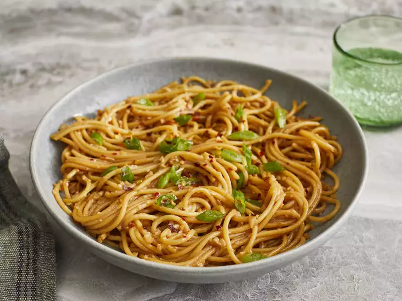

Garlic Noodles

Description
Garlic noodles are a popular Vietnamese-American fusion dish featuring
tender noodles tossed in a rich, savory, and aromatic
sauce made from loads of garlic, butter, soy sauce, oyster sauce, and
Parmesan cheese. Originating in San Francisco, this dish offers a deeply
umami-packed flavor profile with a velvety, garlicky coating
Ingredients
For Secret Sauce
- 2 tablespoons soy sauce
- 1 tablespoon oyster sauce
- 2 teaspoons Worcestershire sauce
- 2 teaspoons fish sauce
- ¼ teaspoon sesame oil
- 1 pinch cayenne pepper
For Noodles
- 4 tablespoons unsalted butter
- 8 cloves garlic, minced
- 6 ounces spaghetti
- ¼ cup finely grated Parmigiano-Reggiano cheese
- 1 tablespoon chopped green onion, or to taste
- 1 pinch red pepper flakes
Steps
- Gather all ingredients. Stir soy sauce, oyster sauce, Worcestershire sauce, fish sauce, sesame oil, and cayenne pepper together in a small bowl for the secret sauce.
- Melt butter in a skillet over medium heat. Add garlic; cook and stir just until fragrant, about 1 minute. Quickly stir in the secret sauce and turn off the heat.
- Bring a large pot of lightly salted water to a boil. Cook spaghetti in boiling water, stirring occasionally, until tender yet slightly firm to the bite, about 12 minutes.
- Transfer spaghetti into the sauce using tongs, bringing some of the cooking water with it. Toss until well coated; stir in Parmesan cheese. Splash in more pasta water if noodles are too dry.
- Plate noodles; garnish with green onions and red pepper flakes.